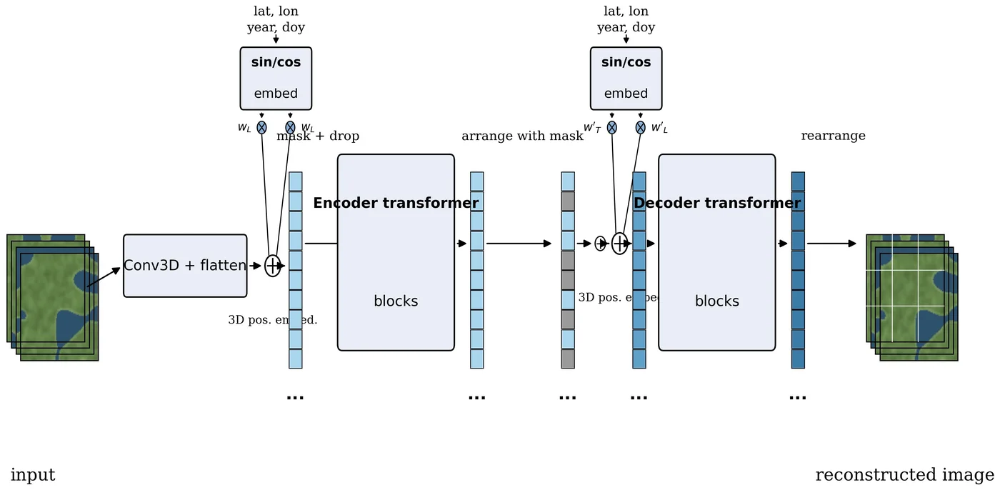
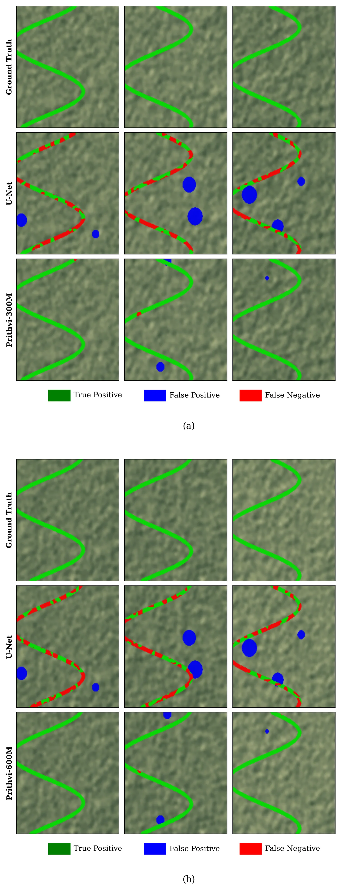
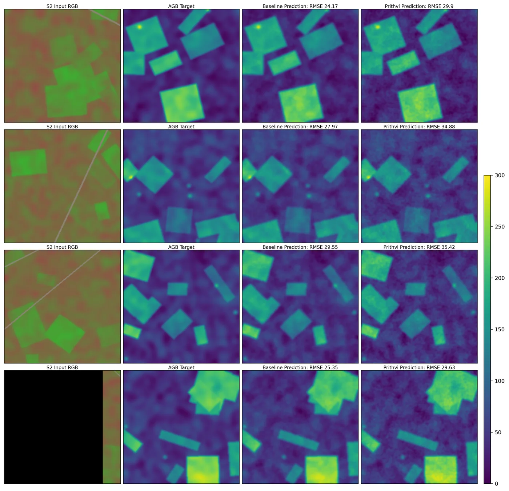

Prithvi EO 2.0 — Earth Observation Foundation Model
The Emerald Meridian
From the Emerald Meridian the whole living Earth is set down in the atlas: 4.2 million glimpses drawn from the Harmonized Landsat–Sentinel archive, 2014 to 2023, each glimpse four seasons deep and six colors wide, chosen so that every kind of land — every ecoregion — has its page.
The cartographer here is a masked autoencoder taught to see in space and time at once, with the date and the place whispered into its tokens. It was raised in two sizes — 300 and 600 million parameters — on the JUWELS Booster supercomputer, and it travels with its own toolkit, TerraTorch, so any fieldworker may fine-tune it on a single GPU.
Its maps hold under flood and fire: waters traced at 83.1% IoU, burn scars at 83.2%, landslides found from only fifty examples — and across the twelve trials of GEO-Bench, roughly eight parts in a hundred better than the atlas that came before it.
Project record
Multi-temporal Vision Transformer foundation model for Earth observation, pretrained on NASA Harmonized Landsat-Sentinel (HLS) imagery and benchmarked across GEO-Bench, flood / wildfire / landslide mapping, crop segmentation, and biomass regression.
Role
Role — to be inscribed
Stack
Results
- ~8% overall improvement over Prithvi-EO-1.0 on the 12-task GEO-Bench suite; top performer among the released 300 M / 600 M variants.
- Flood mapping water IoU 83.1% (vs. 79.6% for EO-1.0) and wildfire burn-scar IoU 83.2% (vs. 76.8%).
Links
Artifacts from the realm


